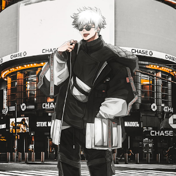

Bhushan Badhe
Full Stack Developer | Fresher
About Me
I’m a motivated and detail-oriented developer with a strong interest in building reliable and engaging web applications. My work focuses on modern web technologies, and I enjoy translating ideas into clean, functional, and user-friendly experiences.
I value clarity, consistency, and continuous improvement in my development process. I prefer learning through hands-on projects, refining my skills with every iteration, and understanding concepts deeply rather than superficially. This approach has helped me build a solid foundation and adapt quickly to new tools and workflows.
My long-term goal is to grow into a full-stack web developer, capable of contributing across the stack and delivering complete, production-ready solutions. I’m actively expanding my skill set and looking forward to opportunities where I can learn, collaborate, and create meaningful digital products.